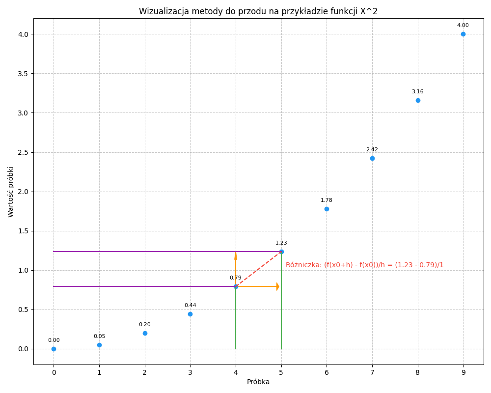
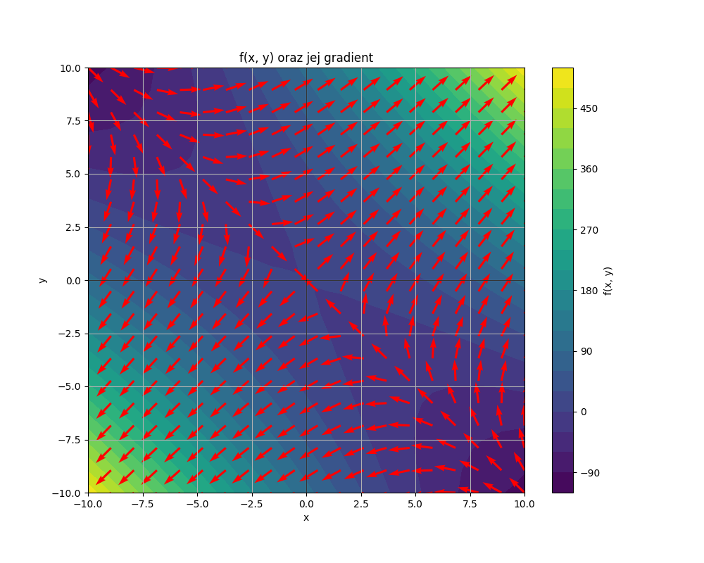
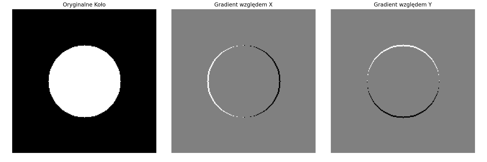
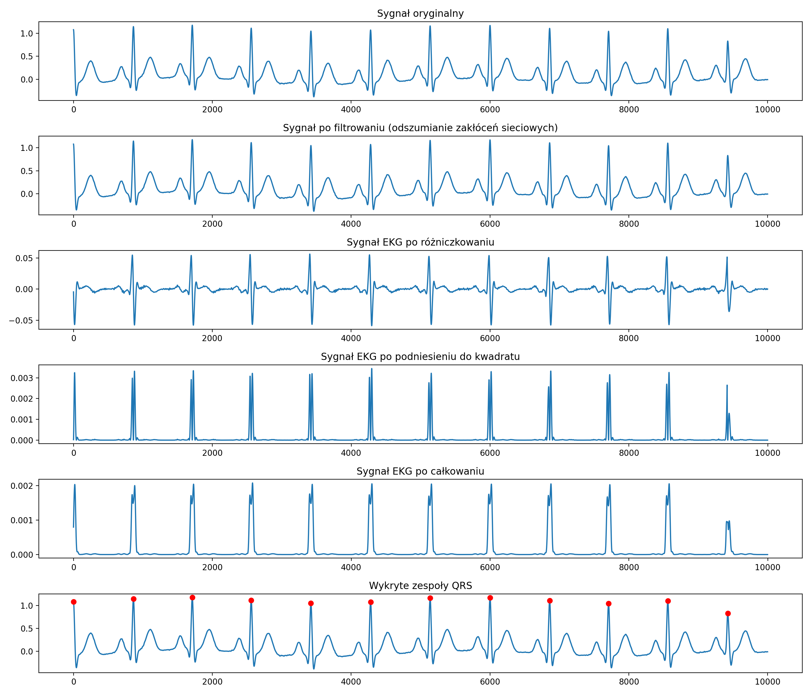

Laboratorium 2
Zakres Tematyczny
- Różniczkowanie numeryczne,
- Sposoby obliczania gradientu,
- Podstawowe typy gradientu,
- Splot,
- Analiza błędów numerycznych w porównaniu do rozwiązań analitycznych,
- Implementacja gradientów analitycznych,
- Przykłady praktyczne,
- Zadania do samodzielnego rozwiązania.
Różniczkowanie - analityczne oraz numeryczne
Do różniczkowania można podejść zarówno numerycznie, jak i analitycznie, a każde z nich ma swój własny zestaw zalet i ograniczeń.
- Definicja:
- Różniczkowanie analityczne Polega na wykorzystaniu reguł różniczkowania (takich jak reguła potęg, reguła iloczynu, reguła łańcucha itp.) do znalezienia pochodnej funkcji. Na przykład pochodna \(f(x) = x^2\) to \(f'(x) = 2x\).
- Różniczkowanie numeryczne Różniczkowanie numeryczne to metoda przybliżonego obliczania pochodnych funkcji za pomocą technik numerycznych. Zamiast korzystać z klasycznych reguł różniczkowania, stosuje się różnice skończone oparte na wartościach funkcji w określonych punktach.
- Dokładność:
- Różniczkowanie analityczne Dostarcza dokładnego wyrażenia dla pochodnej, zakładając, że nie popełniono błędów w procesie obliczenia pochodnej analitycznie.
- Różniczkowanie numeryczne Dostarcza tylko przybliżenie pochodnej. Dokładność przybliżenia jest zależna od długości kroku \(h\). Zbyt duża wartość h może wprowadzić błędy obcięcia podczas gdy zbyt mała wartość może wprowadzić błędy zaokrąglenia.
- Zastosowanie:
- Różniczkowanie analityczne Ograniczone do funkcji, które można różniczkować za pomocą znanych reguł i technik (np. pochodną funkcji sinus jest funkcja cosinus). Niektóre złożone funkcje mogą być trudne lub niemożliwe do zróżniczkowania analitycznie.
- Różniczkowanie numeryczne Można je stosować do prawie każdej funkcji, pod warunkiem że funkcja jest dobrze zachowująca się (tj. ciągła i gładka) w interesującym regionie. Sprawia to, że jest użyteczne dla funkcji, dla których trudno uzyskać analityczną pochodną (np. sygnał EKG)
- Narzędzia:
- Różniczkowanie analityczne Wykonywane za pomocą manipulacji algebraicznych, symbolicznych narzędzi obliczeniowych takich jak Mathematica lub Maple, lub systemów algebry komputerowej (CAS) w kalkulatorach.
- Różniczkowanie numeryczne Implementowane za pomocą języków programowania, oprogramowania takiego jak MATLAB czy Python (z bibliotekami takimi jak NumPy lub SciPy), lub konkretnych narzędzi do obliczeń numerycznych.
Sposoby obliczania gradientu
Ogólnie sposoby obliczania gradientu można podzielić na metody analityczne i numeryczne.
Metoda Analityczna
- Polega na bezpośrednim zastosowaniu reguł różniczkowania matematycznego do obliczenia gradientu
- Idealna w przypadkach gdy funkcja jest jasno określona oraz różniczkowalna w całej dziedzinie
- Dla funkcji wektora skalarnego \(f(\mathbf{x})\) gdzie \(\mathbf{x}\) jest wektorem w przestrzeni \(\mathbb{R}^n\), \(\nabla f(\mathbf{x}) = \left[ \frac{\partial f}{\partial x_1}, \frac{\partial f}{\partial x_2}, \ldots, \frac{\partial f}{\partial x_n} \right]\)
Metoda Numeryczna
- Przybliża gradient poprzez obliczenie funkcji w dwóch pobliskich punktach i obliczenie różnicy.
- Przydatne, gdy gradient analityczny jest trudny do uzyskania lub podczas weryfikacji poprawności gradientu analitycznego.
- Powszechnie stosowane metody to metoda różnic w przód, w tył i metoda różnic centralnych.
Metoda różnic w przód
- \(\frac{\partial f(\mathbf{x})}{\partial x} \approx \frac{f(\mathbf{x} + h ) - f(\mathbf{x})}{h}\)
Metoda różnic w tył
- \(\frac{\partial f(\mathbf{x})}{\partial x} \approx \frac{f(\mathbf{x}) - f(\mathbf{x} - h)}{h}\)
Metoda różnic centralnych
- \(\frac{\partial f(\mathbf{x})}{\partial x} \approx \frac{f(\mathbf{x} + h) - f(\mathbf{x} - h)}{2h}\)
Przykład
Załóżmy że mamy sygnał \(\textbf{s}\) o następujących wartościach:
\[ s = [0, 0.04, 0.19, 0.44, 0.79, 1.23, 1.77, 2.41, 3.16, 4] \]
Otrzymano go próbkując sygnał napięciowy z częstotliwością \(f = 1 \text{Hz}\). Co sekundę zapisywano kolejne wartości sygnału do tablixy \(s\). Interesuje nas przeprowadzenie operacji różniczkowania na tym sygnale metodą “do przodu”.
Wiemy, że metoda do przodu definiowana jest jako: \[dx = \frac{f(x+h) - f(x)}{h}\]
Nasz sygnał jest sygnałem numerycznym z wartościami zdefiniowanymi w konkretnych jego punktach, dla indeksów \(0, 1, 2, 3... n\) naszej tablicy \(s\). W tym przypadku długość naszego kroku \(h\) będzie musiała być wielokrotnością liczby całkowitej \(1\). Załóżmy więc, że będzie to po prostu 1.
Przy takim założeniu nasza formuła na metodę “do przodu” przybierze postać: \[dx = \frac{f(x+1) - f(x)}{1}\] gdzie:
\(dx\) - wartość różniczki w danym punkcie
\(x\) - indeks tablicy \(s\)
Przykład takiego obliczania pochodnej sygnału dyskretnego z naszej tablicy \(s\) zilustrowano na rysunku poniżej.

Implementacja funkcyjna
def forward_difference(f, x, h=1e-5):
"""
Approximate the derivative of f at x using the forward difference method.
Parameters:
- f: The function to differentiate.
- x: The point at which to evaluate the derivative.
- h: A small step size for differentiation, default value is 1e-5.
Returns:
- The approximated derivative of f at x.
"""
return (f(x + h) - f(x)) / hImplementacja dyskretna
def forward_difference(signal):
"""
Approximate the derivative of a discrete signal using the forward difference method.
Parameters:
- signal: Numpy array containing discrete signal values.
Returns:
- Numpy array containing the approximated derivative values.
"""
derivative = np.zeros_like(signal)
# Dla każdego punktu w sygnale proszę obliczyć różnicę do przodu
# Pytanie: Co zrobić z ostatnią próbką sygnału?
for i in range(len(signal) - 1):
derivative[i] = signal[i + 1] - signal[i]
return derivativePodstawowe typy gradientu
Splot
Czym jest splot
W matematyce splot jest operacją matematyczną na dwóch funkcjach (\(f\) i \(g\)), która tworzy trzecią funkcję (\(f*g\)), która wyraża sposób, w jaki kształt jednej jest modyfikowany przez drugą.
Operacja splotu dyskretnego często opisywana jest przez równanie: \[h[n] = (f * g)[n] = \sum_{m=-\infty}^{\infty} f[m] g[n - m]\]
Poszczególne składniki tego równania przedstawiają się następująco:
\(h[n]\) - Jest to sekwencja wyjściowa (wynikowa) po operacji splotu. Dla każdej wartości \(n\), \(h[n]\) reprezentuje wartość splotu dla tego konkretnego punktu
\((f * g)[n]\) - To jest alternatywna notacja dla \(h[n]\) i wskazuje na operację splotu między \(f\) a \(g\) w punkcie \(n\),
\(\sum_{m=-\infty}^{\infty}\) - Oznacza sumowanie (czyli dodawanie wartości) dla wszystkich wartości mm od minus nieskończoności do plus nieskończoności. W praktyce, w komputerowych implementacjach splotu, zakres ten jest zwykle ograniczony do długości sekwencji wejściowych.
\(f[m]\) - Jest to wartość sekwencji \(f\) w punkcie \(m\). \(f\) jest jednym z sygnałów wejściowych (często nazywanym sygnałem wejściowym).
\(g[n - m]\) - Jest to wartość sekwencji \(g\) w punkcie \(n−m\). \(g\) jest drugim sygnałem wejściowym (często nazywanym kernelem). \(n−m\) oznacza “przesunięcie” sekwencji \(g\) względem \(f\), co pozwala na “skanowanie” i mnożenie tych dwóch sygnałów . To jest bardzo ważne, gdyż zachodzą tu dwie rzeczy: - Przesunięcie - Dla każdego \(m\) sygnał \(g\) jest przesuwany względem \(f\). Przesunięcie oznacza, że wartości sygnału \(g\) są mnożone przez odpowiadające im wartości w sygnale \(f\) w miarę jak zmienia się \(m\). - Odbicie - W kontekście splotu, odbicie jednego z sygnałów (często kernela) jest kluczowym krokiem. Proces ten polega na odwróceniu kolejności próbek sygnału względem osi czasu lub indeksu. Odbicie jest konieczne, aby poprawnie ocenić, jak kernel wpłynie na każdy fragment sygnału wejściowego w trakcie operacji splotu.
Fabuła:
Organizujemy pokaz fajerwerków. Chcemy aby w każdej sekundzie wystrzeliwanych było \(n\) fajerwerków. Każdy fajerwerk spala się według funkcji spalania \(s\). Chcemy obliczyć ile jednostek gazów spalania znajduje się w danej sekundzie pokazu fajerwerków w atmosferze.
Obliczenia:
Mamy sygnał odpalania fajerwerków: \[f(t) = [1, 2, 2, 1]\]
Sygnał ten, mówi nam że: - W pierwszej sekundzie odpalamy 1 fajerwerk - W drugiej sekundzie odpalamy 2 fajerwerki - W trzeciej sekundzie odpalamy 2 fajerwerki - W czwartej sekundzie odpalamy 1 fajerwerk
Każdy fajerwerk spala się zgodnie z funkcją: \[s(t) = [2, 1, 0]\]
Oznacza to, że:
- W pierwszej sekundzie po odpaleniu fajerwerk emituje 2 jednostki gazu,
- W drugiej sekundzie po odpaleniu emituje 1 jednostkę gazu
- W trzeciej sekundzie nie emituje gazu (bo zgasł)
Aby obliczyć całkowitą ilość emitowanego gazu w funkcji czasu, wykonujemy splot sygnału odpalania fajerwerków z funkcją spalania:
\[h(t) = f(t) * s(t)\]
Wynik splotu będzie wyglądał następująco:
- \((1 × 2) = 2\)
- \((1 × 1)+(2 × 2)= 1 + 4 = 5\)
- \((1×0)+(2×1)+(2×2)=0+2+4=6\)
- \((2×0)+(2×1)+(1×2)=0+2+2=4\)
- \((2×0)+(1×1)=1\)
- \((1×0)=0\)
Więc sygnał \(h(t)\), który przedstawia ilość emitowanego gazu w funkcji czasu, wynosi:
\[h(t) = [2,5,6,4,1,0]\]
Ten wynik mówi nam że:
- w pierwszej sekundzie emitujemy 2 jednostki gazu,
- w drugiej sekundzie 5 jednostek,
- w trzeciej sekundzie 6 jednostek,
- w czwartej sekundzie 4 jednostki,
- w piątej sekundzie 1 jednostkę,
- a w szóstej sekundzie 0 jednostek.
Splot a różniczkowanie numeryczne
Przeanalizujmy wzory na
| Metoda | Pierwsza pochodna (\(f'(x)\)) | Druga pochodna (\(f''(x)\)) |
|---|---|---|
| Do przodu | \(\frac{f(x+h) - f(x)}{h}\) | \(\frac{f(x+2h) - 2f(x+h) + f(x)}{h^2}\) |
| Różnic centralnych | \(\frac{f(x+h) - f(x-h)}{2h}\) | \(\frac{f(x+h) - 2f(x) + f(x-h)}{h^2}\) |
| Do tyłu | \(\frac{f(x) - f(x-h)}{h}\) | \(\frac{f(x) - 2f(x-h) + f(x-2h)}{h^2}\) |
Patrząc na tabelę, zauważmy że:
- W kolejnych pochodnych zawsze używamy jedynie próbek z różniczkowanego sygnału oraz kroku \(h\)
- W każdym równaniu występują pewne znane komponenty: \(f(x)\), \(f(x+h)\), \(f(x+2h)\), \(f(x-h)\), \(f(x - 2h)\).
Możemy zatem naszą tabelę zapisać w inny sposób, rozbijając ją na elementy z konkretnymi współczynnikami, na przykład:
- Metoda różnic ‘do przodu’, pierwsza pochodna: \(\frac{1 × f(x+h) -1 × f(x)}{h}\). Czyli możemy przyjąć, że kernel takiej operacji to: \([1, -1]\) a wynik możemy po prostu podzielić przez \(h\).
Innymi słowy, obliczenie pierwszej pochodnej sygnału \(s\) może być przeprowadzone z wykorzystaniem splotu z kernelem \(g = [-1, 1]\)odpowiadającym operacji pierwszej pochodnej.
Przykład numeryczny:
import numpy as np
# Zdefiniujmy jakiś sygnał dyskretny
s = np.array([1, 3, 5, 7, 11, 13, 17, 19])
# Zdefiniujmy kernel dla obliczenia pierwszej pochodnej metodą "do przodu"
h = 1.0
kernel = np.array([-1/h, 1/h])
# Obliczamy pierwszą pochodną używając splotu
# Używamy opcji 'valid' aby uniknąć artefaktów krańcowych (boundary effect)
# Przejrzyj dokumentację funkcji np.convolve aby dowiedzieć się jak działa
ds = np.convolve(s, kernel, mode='valid')
print(ds)Analiza błędów numerycznych w porównaniu do rozwiązań analitycznych
Definicja błędu: Błąd numeryczny to różnica między wartością otrzymaną z metody numerycznej a dokładną wartością analityczną.
Źródła błędów:
- Błąd zaokrąglenia: Powstaje w wyniku reprezentacji liczb w komputerze z ograniczoną precyzją.
- Błąd przybliżenia: Powstaje w wyniku stosowania metod przybliżonych do obliczeń, np. stosując metody różnicowe do przybliżania pochodnych.
Funkcja: \(f(x) = x^2\)
Dla \(x = 2\): \[f(2) = 2^2 = 4\] \[f(2 + h) = (2 + 0.01)^2 = 4.0401\]
Pochodna Numeryczna używając metody różnic skończonych do przodu: \[f'(x) \approx \frac{f(x+h) - f(x)}{h}\] \[f'(2) \approx \frac{f(2+0.01) - f(2)}{0.01}\] \[f'(2) \approx \frac{4.0401 - 4}{0.01} = 4.01\]
Pochodna Analityczna: \[f'(x) = 2x\] \[f'(2) = 2(2) = 4\]
Błąd Numeryczny: \[\text{Błąd} = \text{Wartość Numeryczna} - \text{Wartość Analityczna}\] \[\text{Błąd} = 4.01 - 4 = 0.01\]
Analiza Błędu Numerycznego: - Błąd wynosi 0.01 dla kroku \(h = 0.01\) przy \(x = 2\). - Błąd ten pochodzi z przybliżenia i będzie się różnić w zależności od wielkości kroku \(h\). Dla mniejszego \(h\) błąd mógłby być mniejszy, ale po pewnym czasie błędy zaokrąglenia mogą zacząć dominować co spowoduje powtórne zwiększenie się błędu numerycznego. - Możemy przeprowadzić dodatkowe obliczenia dla różnych wartości \(h\), aby zrozumieć, jak błąd zmienia się w zależności od wielkości kroku.
W praktyce warto przeprowadzić analizę błędów dla różnych wartości \(h\) i różnych punktów \(x\), aby zrozumieć zachowanie metody numerycznej w różnych warunkach.
Czy możemy przeprowadzić obliczenia analityczne komputerowo?
Częściowo tak. Możemy w tym celu wykorzystać bibliotekę Pythona SymPy:
import sympy as sp
# Zdefiniowanie symbolu
x = sp.Symbol('x')
# Funkcja
f = x**2
# Pochodna funkcji
f_prime = sp.diff(f, x)
print(f"Pochodna funkcji {f} to: {f_prime}")SymPy to biblioteka Pythona o otwartym kodzie źródłowym dla matematyki symbolicznej. Jej celem jest stanie się w pełni funkcjonalnym systemem algebry komputerowej (CAS - Computer Algebra System), przy jednoczesnym utrzymaniu kodu tak prostym, jak to możliwe, aby był zrozumiały i łatwy do rozszerzenia. Obliczenia symboliczne, często określane jako algebra symboliczna lub algebra komputerowa, to gałąź obliczeń matematycznych i informatyki, która koncentruje się na manipulowaniu wyrażeniami matematycznymi w formie symbolicznej, a nie na uzyskiwaniu przybliżeń numerycznych.
Implementacja gradientów analitycznych
Obliczmy gradient analitycznie za pomocą biblioteki obliczeń symbolicznych w Pythonie, sympy.
Jako przykład użyjmy prostej funkcji dwóch zmiennych: \[f(x, y) = x^2 + 3xy + y^2\]
Gradient funkcji \(f\) jest wektorem jego pochodnych cząstkowych względem każdej ze zmiennych (w naszym przykładzie względem \(x\) oraz \(y\)): \[\nabla f = \left[ \frac{\partial f}{\partial x}, \frac{\partial f}{\partial y} \right]\]
Przeanalizujmy jak przeprowadzić takie obliczenia symbolicznie, z wykorzystaniem biblioteki sympy:
import sympy as sp
# Definiujemy zmienne
x, y = sp.symbols('x y')
# Definiujemy funkcje
f = x**2 + 3*x*y + y**2
# Obliczamy gradient
grad_f = [sp.diff(f, var) for var in (x, y)]
print("Gradient:", grad_f)Powinniśmy otrzymać następujący wynik:
Gradient: [2*x + 3*y, 3*x + 2*y]Podsumowując, gradientem naszej funkcji \(f(x, y)\) jest \([2x + 3y, 3x + 2y]\).
Funkcja sympy.diff() zapewnia analityczną (dokładną) pochodną, w przeciwieństwie do aproksymacji numerycznej.
Zwizualizujmy ten przykład:

import numpy as np
import matplotlib.pyplot as plt
import sympy as sp
# Definiujemy zmienne i funkcje
x, y = sp.symbols('x y')
f = x**2 + 3*x*y + y**2
grad_f = [sp.diff(f, var) for var in (x, y)]
# Lambdyfikacja wyrażeń symbolicznych (proces konieczny do wyznaczenia ich wartości dla konkretnych danych numerycznych)
f_callable = sp.lambdify((x, y), f, 'numpy')
f_gradient = sp.lambdify((x, y), grad_f, 'numpy')
# Tworzenie siatki punktów na których rozepniemy nasze dane (bardzo ważna czynność!)
X, Y = np.meshgrid(np.linspace(-10, 10, 20), np.linspace(-10, 10, 20))
# Obliczenie wartości funkcji na konkretnych punktach siatki
Z = f_callable(X, Y)
U, V = f_gradient(X, Y)
# Normalizacja danych (dla lepszej wizualizacji)
N = np.sqrt(U**2 + V**2)
U /= N
V /= N
# Plot
plt.figure(figsize=(10, 8))
# Wyrysowanie funkcji używając metody contour oraz mapy kolorów 'viridis'
contour = plt.contourf(X, Y, Z, 20, cmap='viridis')
plt.colorbar(contour, label='f(x, y) value')
# Narysowanie strzałek reprezentujących wartości gradientu
plt.quiver(X, Y, U, V, angles='xy', scale_units='xy', scale=1, color='r', width=0.005)
plt.title('f(x, y) and its Gradient')
plt.xlabel('x')
plt.ylabel('y')
plt.grid()
plt.axhline(0, color='black',linewidth=0.5)
plt.axvline(0, color='black',linewidth=0.5)
plt.show()Przykłady Praktyczne
Wykrywanie krawędzi
Gradienty mogą być użyte jako najprostsza metoda wykrywania krawędzi, zwłaszcza na obrazach binarnych.

import numpy as np
import matplotlib.pyplot as plt
width, height = 200, 200
# Krok 1: Używamy meshgrid do utworzenia siatki współrzędnych
x, y = np.meshgrid(np.arange(width), np.arange(height))
centerx, centery = width // 2, height // 2
radius = 50
mask = (x - centerx)**2 + (y - centery)**2 <= radius**2
circle_img = np.zeros((width, height))
circle_img[mask] = 1
# Krok 2: Obliczamy gradient
gy, gx = np.gradient(circle_img)
# Krok 3: Wizualizacja
fig, axes = plt.subplots(1, 3, figsize=(15, 5))
axes[0].imshow(circle_img, cmap='gray')
axes[0].set_title("Oryginalne Koło")
axes[1].imshow(gx, cmap='gray')
axes[1].set_title("Gradient względem X")
axes[2].imshow(gy, cmap='gray')
axes[2].set_title("Gradient względem Y")
for ax in axes:
ax.axis('off')
plt.tight_layout()
plt.show()Algorytm Pan-Tompkins
Jednym z algorytmów wykrywających zespół QRS na sygnale EKG jest algorytm Pan-Tompkins. Składa się on z następujących kroków:
- Filtracja pasmowo przepustowa usuwająca zakłócenia sieciowe z sygnału
- Różniczkowanie - służy to podkreśleniu cech morfologicznych sygnału
- Kwadrat - podnosimy sygnał do kwadratu celem wzmocnienia cech morfologicznych
- Integracja (moving average) - operacja ta jest używana do uzyskania finalnego kształtu fali QRS. Sygnał jest przetwarzany za pomocą okna czasowego (np. 30 ms), co skutkuje wygładzeniem sygnału.
- Progowanie - na podstawie przetworzonego sygnału określany jest próg, który służy do wykrywania kompleksów QRS. Wielkość progu jest dynamicznie dostosowywana w trakcie analizy.

import numpy as np # biblioteka numpy do obliczeń numerycznych
import neurokit2 as nk # NeuroKit2 - zawiera generator syntetycznego EKG
import matplotlib.pyplot as plt # Matplotlib - Rysowanie wykresów
def bandpass_filter(signal):
# Placeholder na filtr pasmowo przepustowy - TODO
return signal
# Różniczkowanie
def differentiate(signal):
return np.diff(signal)
# Kwadrat
def square(signal):
return signal ** 2
# Całkowanie
def integrate(signal, window_size):
return np.convolve(signal, np.ones(window_size)/window_size, mode='same')
# Progowanie
def find_qrs(signal, threshold):
qrs_locs = np.where(signal > threshold)[0]
return qrs_locs
# Pan Tompkins zawarty w jednej funkcji
def pan_tompkins_qrs_detection(ecg_signal):
ecg_signal = bandpass_filter(ecg_signal)
differentiated = differentiate(ecg_signal)
squared = square(differentiated)
integrated = integrate(squared, window_size=30) # Adjust based on sampling rate
threshold = np.mean(integrated)
qrs_locs = find_qrs(integrated, threshold)
return qrs_locs
# Postprocessing R-peaków
def refine_r_peaks(qrs_locs, ecg_signal, proximity):
r_peaks = []
grouped_peaks = []
for loc in qrs_locs:
if not grouped_peaks or abs(loc - grouped_peaks[-1]) <= proximity:
grouped_peaks.append(loc)
else:
# Pick the highest point within this group
r_peak = max(grouped_peaks, key=lambda x: ecg_signal[x])
r_peaks.append(r_peak)
grouped_peaks = [loc]
# Handle the last group
if grouped_peaks:
r_peak = max(grouped_peaks, key=lambda x: ecg_signal[x])
r_peaks.append(r_peak)
return r_peaks
# Wygenerowanie sygnału syntetycznego EKG
ecg_signal = nk.ecg_simulate(duration=10, sampling_rate=1000, heart_rate=70)
# Detekcja z użyciem Pan-Tompkins
qrs_locs = pan_tompkins_qrs_detection(ecg_signal)
# Postprocessing
r_peaks = refine_r_peaks(qrs_locs, ecg_signal, proximity=40)
plt.figure(figsize=(14, 5))
plt.plot(ecg_signal, label='EKG')
plt.plot(r_peaks, ecg_signal[r_peaks], "ro", label='R-peaki')
plt.title("Syntetyczny sygnał EKG oraz wykryte zespoły QRS z użyciem algorytmu Pan-Tompkins")
plt.xlabel("Próbki")
plt.ylabel("Amplituda")
plt.legend()
plt.savefig("lab2_pan_tompkins_ecg.png", dpi=200, format="png")
plt.show()Zadania Domowe
Zadanie 1
Zaimplementuj funkcję, (za pomocą pętli for, bez użycia gotowych funkcji) do obliczania pochodnej funkcji jednej zmiennej metodą “centralną”, “do przodu” i “do tyłu”. Jakie są zalety poszczególnych rozwiązań? Jakie są wady? Kiedy warto użyć jednej wersji zamiast drugiej? Skorzystaj z definicji funkcji:
def our_derivatie(x, step=1, mode="central"):
# x - sygnał wejściowy, dyskretny
# step - krok
# mode - tryb działania, możliwe opcje: "central", "forward", "backward"
passZadanie 2
Zaimplementuj funkcję do obliczania splotu 1D (iteracyjnie, bez transformacji Fouriera, bez użycia gotowych funkcji). Porównaj działanie zaimplementowanej funkcji z funkcją biblioteczną (SciPy) oraz czas wykonywania obliczeń. Która funkcja jest szybsza? O ile? Dlaczego? Czy wyniki są identyczne? Porównaj działanie funkcji bibliotecznej liczącej splot z definicji oraz z transformacji Fouriera. (Sprawdź dla różnych wielkości tablic wejściowych).
def our_convolution(x1, x2, mode="pad"):
# x1 - sygnał 1
# x2 - sygnał 2
# mode - tryb działania na granicy sygnału, #pad - padding, #reflect - reflection
passZadanie 3
Zaimplementuj funkcję (za pomocą pętli for, bez użycia gotowych funkcji) do obliczenia pochodnej funkcji jednej zmiennej “centralnie”, która umożliwia wybór rzędu pochodnej (1,2,3,4) oraz trybu (splot lub sekwencyjnie). Porównaj wynik z wartościami analitycznymi na przykładowym wielomianie wyższego stopnia. Przeanalizuj błędy numeryczne (m.in. porównaj obliczenia za pomocą splotu z sekwencyjnym obliczaniem pierwszej pochodnej). Porównaj czas wykonania obliczeń. Skąd się biorą różnice? Które rozwiązanie jest szybsze? Które jest bardziej stabilne? Które rozwiązanie jest obarczone mniejszym błędem?
Sekwencyjna metoda obliczania pochodnej polega na obliczeniu pochodnej danego sygnału (pierwszej), a następnie pochodną drugiego rzędu dostajemy obliczając pochodną pierwszego rzędu pochodnej pierwszego rzędu itd…
def our_derivative(x, step=1, order=1, mode="conv"):
# order - rząd pochodnej, 1,2,3,4
# conv/sequential - tryb działania (konwolucyjnie / sekwencyjnie)
passZadanie 4
Zaimplementuj funkcję (za pomocą pętli for, bez użycia gotowych funkcji do obliczania pochodnych/gradientów) do obliczenia gradientu centralnego funkcji dwóch zmiennych. Na wejściu funkcji będzie tablica 2D (na przykład obraz). Na wyjściu funkcji powinna być tablica gradientów po x oraz y.
Zadanie 5
Zaimplementuj funkcję (za pomocą pętli for, bez użycia gotowych funkcji do obliczania pochodnych/gradientów) do obliczenia gradientu centralnego funkcji dowolnej liczby zmiennych (wejście w postaci tablicy N-wymiarowej). Porównaj działanie (błędy numeryczne, szybkość obliczeń) do wbudowanej funkcji gradient w bibliotece numpy.
def our_gradient(x, step=1):
pass